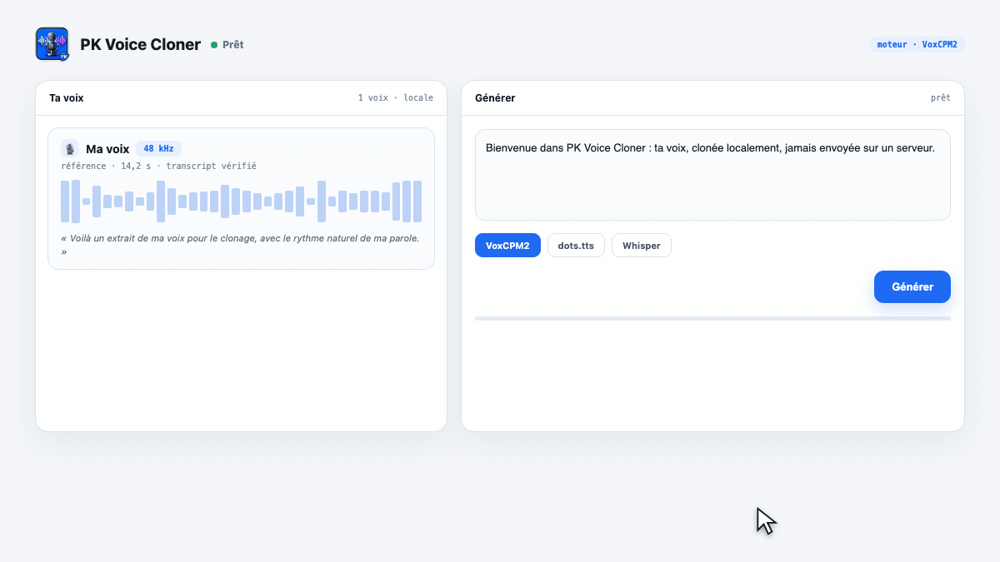
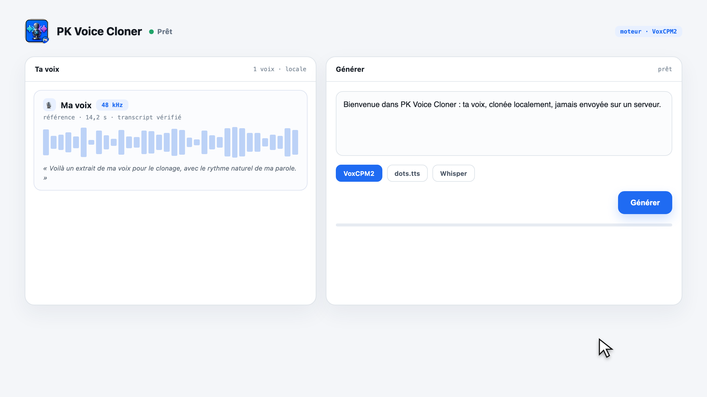
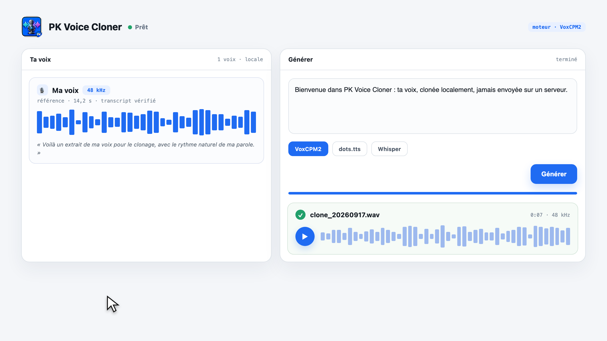

Quelques secondes d'enregistrement suffisent. Le clonage tourne sur ta machine, ta voix ne quitte jamais ton Mac.

Importe ou enregistre ta voix, choisis un moteur, écris ton texte. Le clone est prêt en quelques minutes — sans compte, sans cloud, sans fil.
Enregistre directement dans l'app ou importe un m4a, mp3 ou wav. Le transcript Whisper est extrait automatiquement.
VoxCPM2, dots.tts, Qwen3-TTS, Pocket TTS — installables en un clic, exécutés sur MPS (GPU Apple Silicon).
Aucun serveur, aucun envoi de voix. Tout vit dans data/, sur ton disque, jamais versionné.
Fenêtre native SwiftUI, mises à jour Sparkle signées, installation Homebrew. Pas de terminal à lancer.
L'interface, en vrais états.


Gratuit et open source. Premier lancement : les modèles (~5 Go) se téléchargent automatiquement.
Obtenir PK Voice Cloner